오픈쇼케이스
오픈쇼케이스 진열, 냉기선과 눈높이를 함께 지키는 법
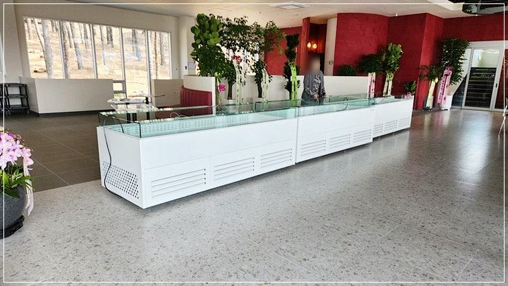
오픈쇼케이스 진열은 손님 눈높이 단에 주력 상품을 두고, 모든 상품을 앞쪽 진열선 안쪽에 맞춰 세우는 것이 기본입니다. 진열선을 넘으면 에어커튼이 깨져 앞줄 상품이 미지근해지니, 많이 보여 주는 것보다 냉기 흐름을 지키며 보여 주는 게 먼저입니다.
안녕하세요. 카페, 편의점, 샐러드 매장의 오픈쇼케이스를 매장에 맞춰 제작하는 한성쇼케이스입니다.
오픈쇼케이스를 들여놓으면 처음 며칠은 상품을 어떻게 놓아야 할지 고민이 많으시죠. 많이 채워야 풍성해 보일 것 같고, 잘 팔리는 상품은 앞으로 쭉 빼서 보여 주고 싶어집니다.
그런데 문이 없는 오픈쇼케이스는 진열 방식이 곧 냉장 성능과 연결됩니다. 상품을 앞으로 너무 내밀거나 위 칸을 꽉 채우면, 앞쪽에 흐르는 찬 공기의 막이 흐트러져 정작 손님이 집어 가는 앞줄 상품이 덜 차가워집니다.
오늘은 오픈쇼케이스에서 잘 보이면서도 시원하게 유지되는 진열법을 단별 배치부터 마감 관리까지 순서대로 정리해 드리겠습니다.
1. 진열선부터 지키기
오픈쇼케이스 선반 앞쪽에는 상품을 놓아도 되는 한계선이 있습니다. 위에서 아래로 흐르는 에어커튼이 지나가는 길이라, 이 선을 넘어 상품을 내밀면 바람이 상품에 부딪혀 밖으로 새어 나갑니다.
포장이 큰 상품이나 높이가 높은 병은 특히 앞으로 튀어나오기 쉽습니다. 진열을 마친 뒤 옆에서 한 번 비스듬히 보면서 앞줄이 일직선으로 맞는지 확인하는 습관을 들여 보세요.
- 선반 앞 진열선을 넘지 않게 정리하세요.
- 맨 아래 단 송풍구를 상품으로 막지 마세요.
- 옆에서 보며 앞줄이 일직선인지 확인하세요.
2. 단별로 역할 나누기
손님 눈높이와 손이 자연스럽게 닿는 가운데 단은 가장 잘 팔리는 자리입니다. 매장의 주력 상품이나 마진이 좋은 신상품을 이곳에 두세요.
맨 아래 단에는 무겁고 부피가 큰 병음료나 묶음 상품을, 맨 위 단에는 가볍고 눈에 띄는 색의 상품을 두면 전체가 안정돼 보입니다.
같은 상품은 세로로 이어 진열하면 손님이 위아래로 시선을 옮기며 찾기 쉽습니다.
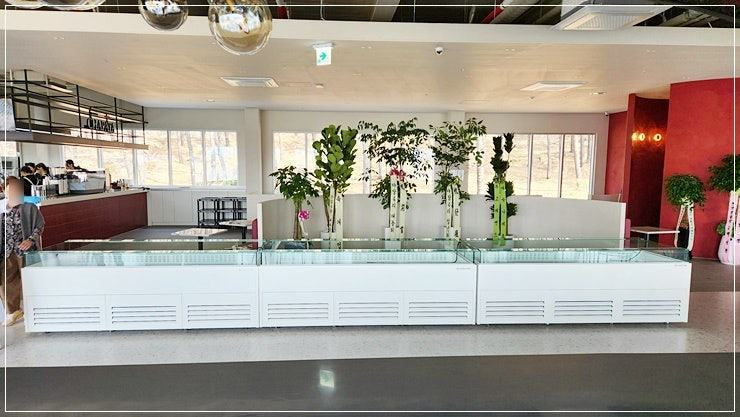
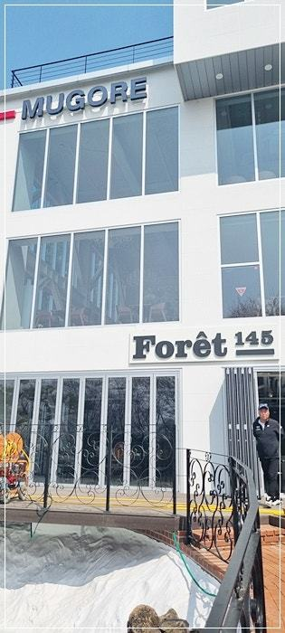
3. 앞면을 채우고 뒤는 비우기
오픈쇼케이스는 손님이 앞에서 하나씩 집어 가니, 비어 보이는 앞줄은 바로바로 뒤에서 당겨 채워 주세요.
앞면만 꽉 차 있어도 매대 전체가 풍성해 보입니다.
반대로 안쪽을 빈틈없이 쌓아 두면 뒷벽에서 나오는 냉기가 앞쪽까지 오지 못합니다. 상품 사이와 뒷벽 사이에 손가락 하나 들어갈 정도의 여유를 두고, 먼저 들어온 상품을 앞으로 빼는 순서로 채우면 유통기한 관리도 쉬워집니다.
4. 조명과 가격표
조명은 상품의 색을 살리는 역할을 합니다. 샐러드와 샌드위치는 산뜻하게, 디저트는 따뜻하게 보이는 색이 어울리니, 진열 구성이 바뀌면 조명 색도 함께 점검해 보세요.
가격표와 상품명 표시는 선반 앞쪽 레일에 붙이되, 에어커튼 송풍구나 흡입구를 가리지 않게 해 주세요.
큰 POP 판이 바람길을 막으면 그 칸만 온도가 올라갑니다.
- 가격표가 송풍구·흡입구를 가리지 않게 하세요.
- 진열 구성이 바뀌면 조명 색도 점검하세요.
5. 마감 후 정리
영업이 끝나면 나이트커버를 내려 냉기 손실과 먼지를 함께 막아 주세요. 남은 상품은 앞줄로 모아 두면 다음 날 아침 진열 시간이 짧아집니다.
선반 앞쪽 레일과 흡입구에는 포장 비닐 조각이나 부스러기가 끼기 쉽습니다. 마감 때 한 번씩 닦아 주면 바람길이 막히지 않아 냉장 상태가 고르게 유지됩니다.
체크리스트
- 선반 앞 진열선 지키기
- 가운데 단에 주력 상품
- 아래 단 무거운 상품, 위 단 가벼운 상품
- 앞면 채우기와 뒷벽 여유
- 가격표가 바람길을 막지 않는지
- 나이트커버와 흡입구 청소
손님이 직접 쓰는 높이에 맞춘 대형 오픈쇼케이스 사례
규모가 꽤 큰 오픈쇼케이스를 제작해 설치한 매장입니다. 손님이 매장에 들어와 직접 상품을 꺼내 쓰는 쇼케이스였기 때문에, 높이와 전체 규모를 손님 눈높이와 손 닿는 범위에 맞춰 꼼꼼하게 치수를 확인했습니다.
공간 분위기에 맞춰 사이즈와 재질을 세심하게 정했고, 매장의 다른 인테리어 요소와 어우러지도록 디자인했습니다.
사전 확인부터 자체 공장 제작, 배송과 설치까지 이어서 진행했고, 사용 중 불편한 부분은 A/S 전담팀이 대응하도록 안내해 드렸습니다.
진열은 결국 손님이 손을 뻗는 높이에서 시작된다는 점을 다시 확인한 현장이었습니다.
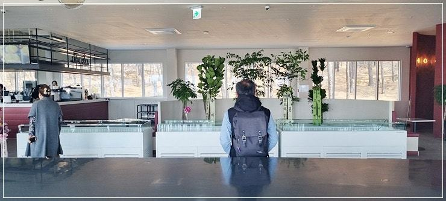
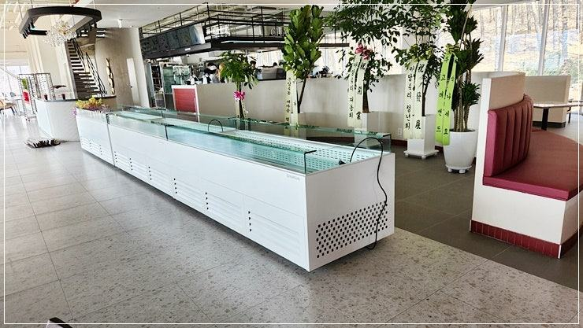
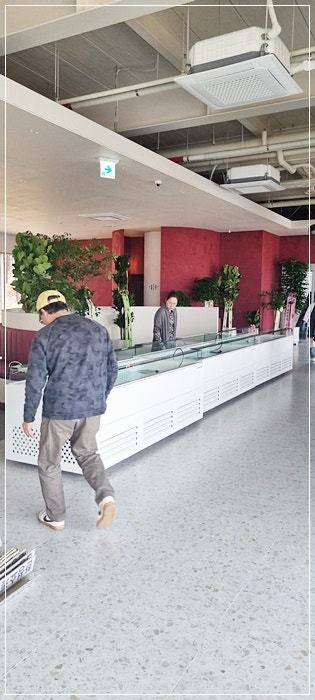
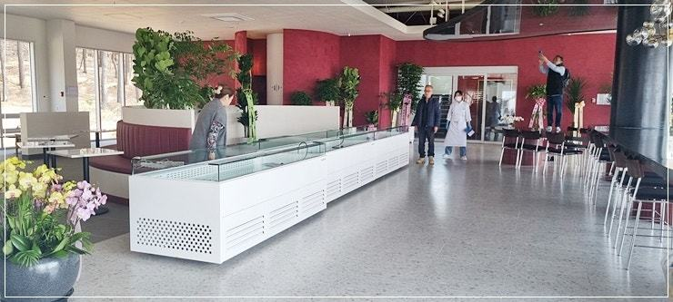
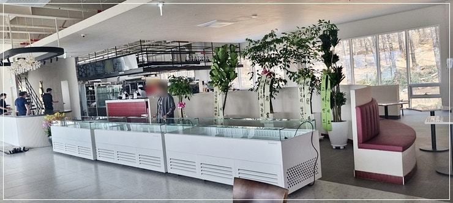
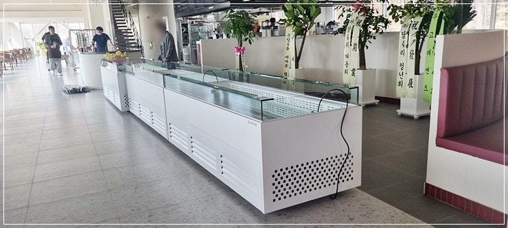
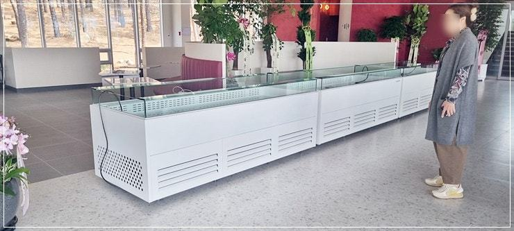


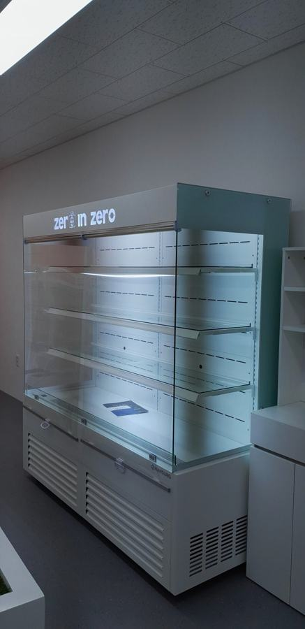
자주 묻는 질문
오픈쇼케이스 앞줄 상품만 미지근한 이유가 뭔가요?
상품이 진열선을 넘었거나 가격표·POP가 바람길을 막고 있을 가능성이 큽니다. 앞줄을 진열선 안쪽으로 정리하고 송풍구와 흡입구 주변을 비워 보세요.
상품을 많이 채워야 매출이 오르지 않나요?
앞면이 꽉 차 보이는 것이 중요하지 안쪽까지 빈틈없이 쌓을 필요는 없습니다. 안쪽에 여유를 둬야 냉기가 돌아 상품 상태가 고르게 유지됩니다.
선반 높이를 나중에 바꿀 수 있나요?
선반 간격을 조정할 수 있게 제작하면 계절 상품에 맞춰 바꿔 쓸 수 있습니다. 진열할 상품 높이를 미리 알려 주시면 그에 맞춰 설계해 드립니다.
매장 조건에 맞춰 만드는 한성쇼케이스
원하시는 제품 사진과 설치할 공간 사진만 보내 주셔도 매장에 맞는 구성을 추천해 드립니다.
- 전국 240여 개 A/S 전담 센터 운영
- 본사 대량 자재 매입으로 품질 대비 합리적인 가격
- 유럽제·삼성 냉각 콤프레셔 적용
- 국내 최초 쇼케이스 전문 디자이너 상주
매장 폭과 원하는 진열 구성을 알려 주세요. 실측과 견적을 안내해 드립니다.
031-986-2458